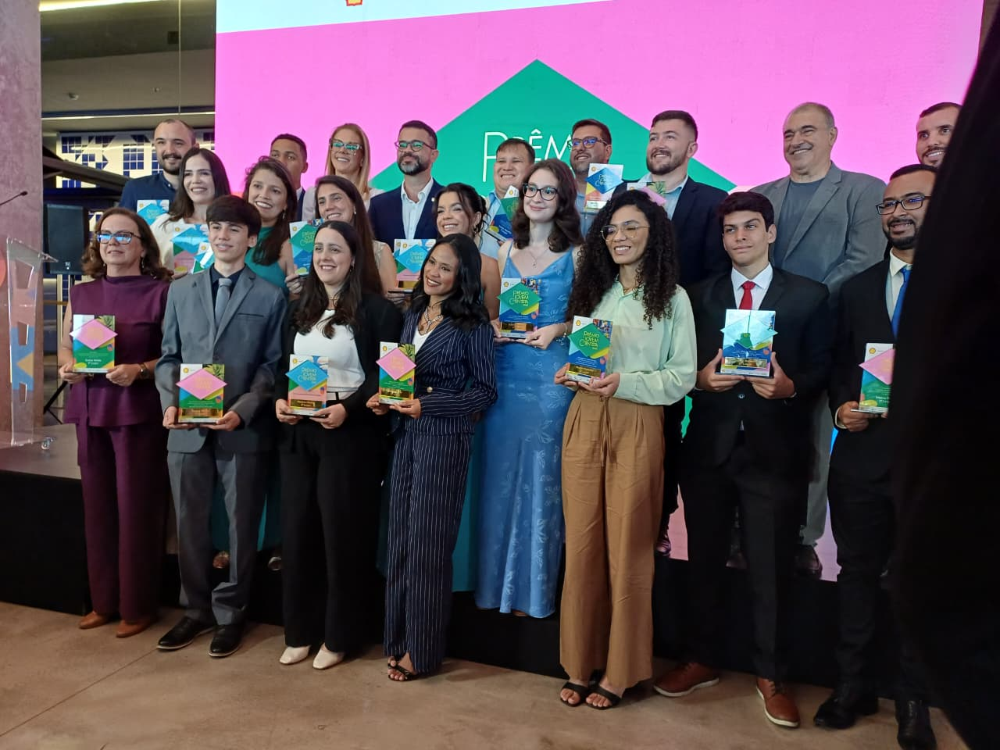
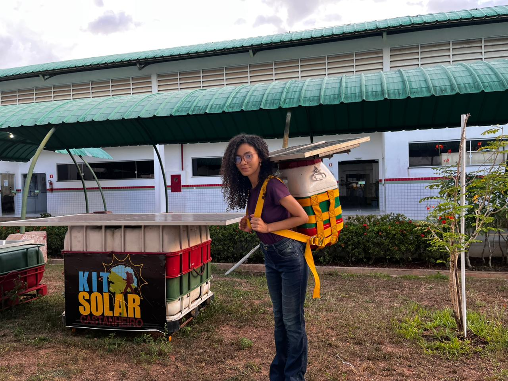
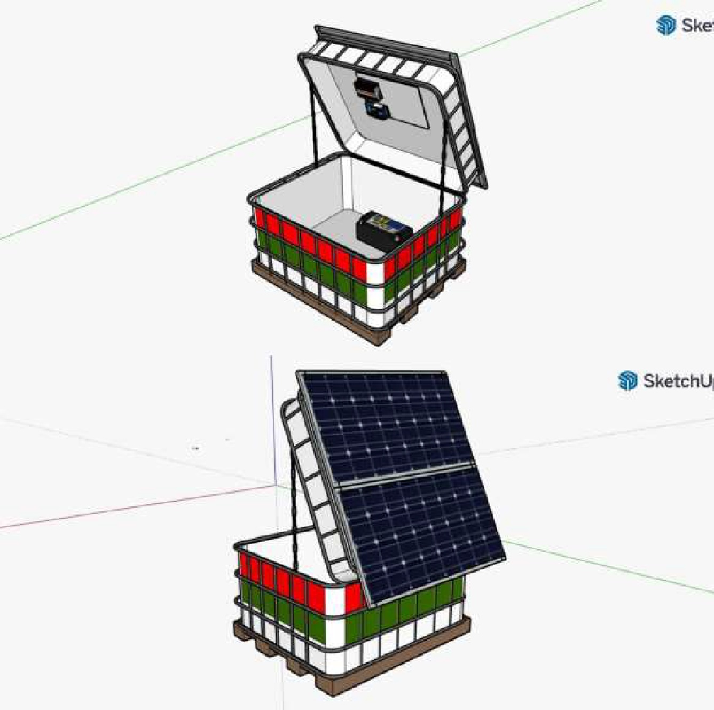
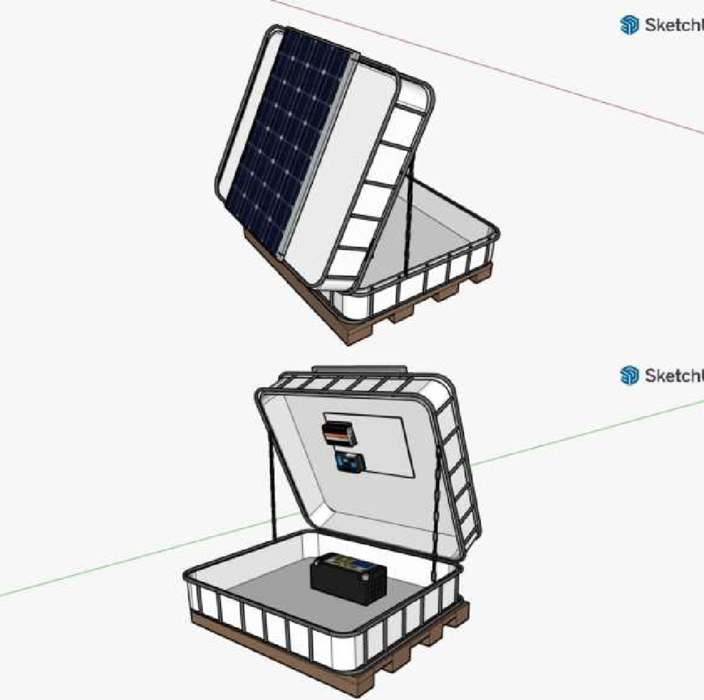
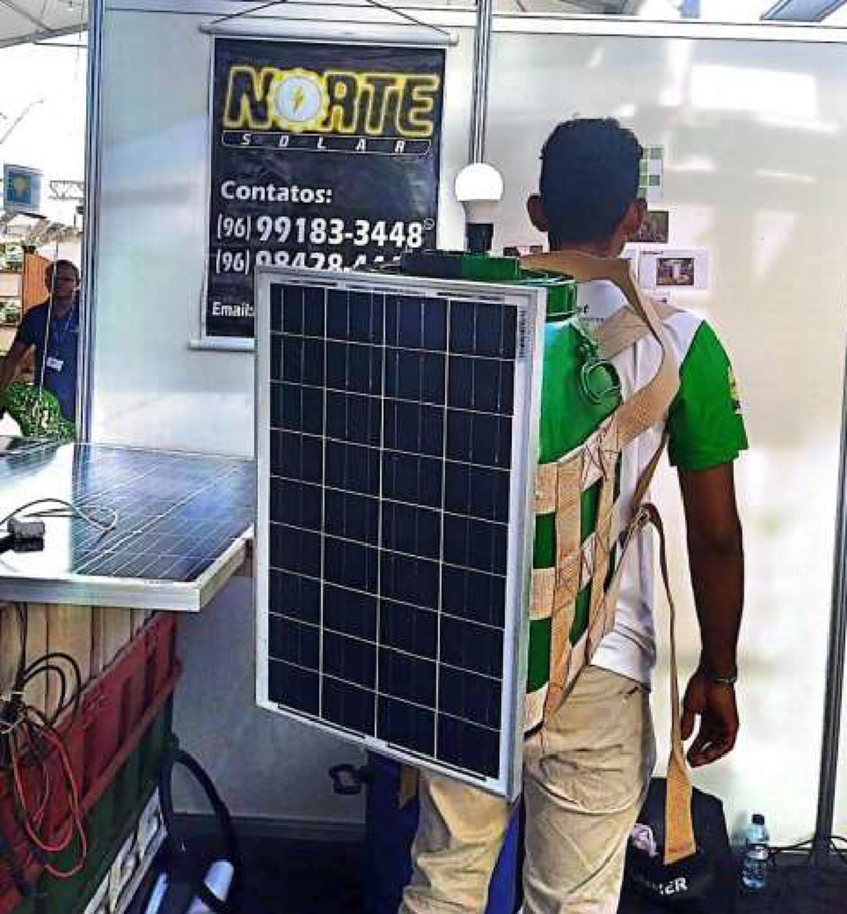
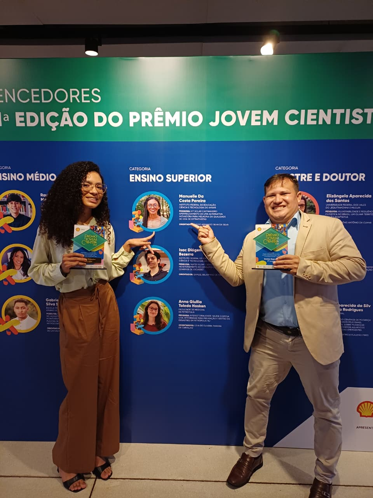
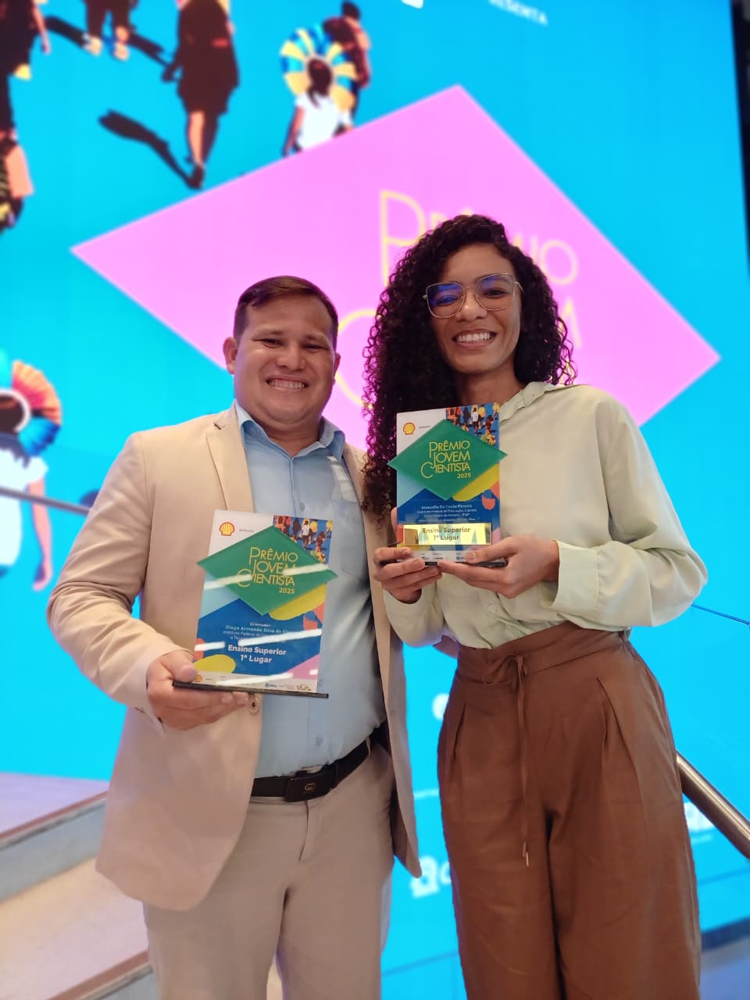
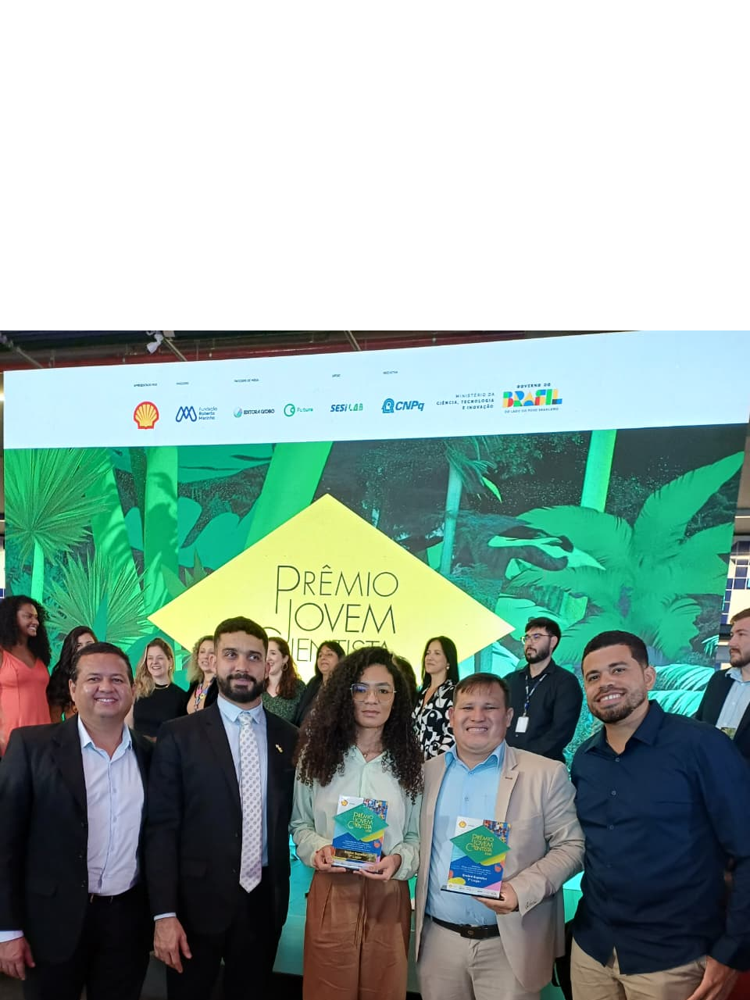

Kit Solar Castanheiro
Tecnologia social desenvolvida na Amazônia para promover autonomia energética, sustentabilidade e justiça socioambiental às comunidades extrativistas.
Apoiar o Projeto

O projeto “Kit Solar Castanheiro: aperfeiçoamento de uma alternativa inovadora para melhoria da qualidade de vida de extrativistas” tem como objetivo desenvolver e aprimorar uma solução tecnológica sustentável baseada em energia solar, voltada ao atendimento de demandas básicas de comunidades extrativistas da Amazônia, especialmente aquelas vinculadas à cadeia produtiva da castanha-da-Amazônia.
A proposta integra ciência, tecnologia e inovação como ferramentas estratégicas para o enfrentamento das mudanças climáticas e a promoção da justiça socioambiental, oferecendo uma alternativa limpa, acessível e de baixo custo para a geração de energia em áreas com difícil acesso à rede elétrica convencional.
O kit solar foi concebido para apoiar atividades produtivas, domésticas e de organização comunitária, contribuindo para a redução da vulnerabilidade socioeconômica e para o fortalecimento da autonomia das populações tradicionais. Além do caráter tecnológico, o projeto possui forte dimensão social e ambiental, ao estimular práticas sustentáveis, reduzir a dependência de combustíveis fósseis e valorizar os modos de vida extrativistas.
Dessa forma, o Kit Solar Castanheiro apresenta-se como uma iniciativa replicável, alinhada às políticas públicas de enfrentamento às mudanças climáticas e ao desenvolvimento sustentável da Amazônia. O êxito do projeto reflete tanto o protagonismo da jovem pesquisadora Manuelle da Costa Pereira quanto a atuação acadêmica e institucional do professor Dr. Diego Armando Silva da Silva, cuja trajetória consolidada em pesquisa, inovação e extensão tem contribuído de maneira decisiva para a formação de talentos e para o fortalecimento da ciência no Estado do Amapá.

Primeira geração do Kit Solar Castanheiro, desenvolvida para validar a viabilidade do uso de energia solar no contexto do extrativismo florestal. A estrutura foi inicialmente acondicionada em bambona reutilizada de 50 litros, conectando a tecnologia à cultura material dos próprios extrativistas.
Essa fase permitiu identificar limitações relacionadas ao peso, ergonomia, segurança elétrica e logística de transporte em áreas de difícil acesso. Sua apresentação pública em feira científica revelou críticas importantes que impulsionaram o amadurecimento técnico do projeto.

A segunda geração incorporou melhorias estruturais significativas, com redução do volume do recipiente e reorganização interna dos componentes elétricos, tornando o sistema mais compacto e manejável.
Foram realizados testes em ambiente real de uso nas comunidades extrativistas do Vale do Jari, avaliando desempenho energético, resistência mecânica, segurança operacional e aceitabilidade social.
Os resultados forneceram parâmetros técnicos essenciais para o refinamento da solução.

A versão atual representa um salto qualitativo no desenvolvimento do projeto. O sistema tornou-se modular, com melhor distribuição de carga, separação física entre geração, armazenamento e uso da energia.
Incorpora baterias de maior segurança operacional, redesign estrutural e ergonomia adequada ao transporte em trilhas florestais.
Esta versão fundamenta o pedido de registro como Modelo de Utilidade junto ao INPI (Processo nº BR 20 2024 006695 8), consolidando a maturidade tecnológica do Kit Solar Castanheiro.

Dr. Diego Armando Silva da Silva é Doutor em Ciências Florestais e professor do Instituto Federal do Amapá (IFAP) – Campus Laranjal do Jari, onde atua nos cursos de Engenharia Florestal e Técnico em Florestas, além de colaborar em programas de pós-graduação.
É líder do Grupo de Pesquisa Centro de Estudos em Ecologia e Manejo na Amazônia (CEEMA), com ampla atuação em pesquisa aplicada, inovação tecnológica e extensão universitária. Possui trajetória reconhecida no desenvolvimento de tecnologias sociais e no manejo florestal sustentável, tendo recebido premiações institucionais, como os títulos de Pesquisador Inovador e Doutor Empreendedor do Estado do Amapá.
Ao longo de sua carreira, coordenou expedições científicas em áreas remotas da Amazônia, incluindo a participação no registro da árvore mais alta já documentada na região. Sua atuação acadêmica integra ensino, pesquisa e extensão, contribuindo de forma significativa para a formação de recursos humanos qualificados e para o fortalecimento da ciência produzida no Estado do Amapá.
Currículo Lattes:
http://lattes.cnpq.br/7306351915828921

Manuelle da Costa Pereira é estudante pesquisadora vinculada ao Instituto Federal do Amapá (IFAP) – Campus Laranjal do Jari, com atuação destacada em projetos de iniciação científica e desenvolvimento de tecnologias sociais voltadas à sustentabilidade na Amazônia.
Participou ativamente da concepção, desenvolvimento e aperfeiçoamento do Kit Solar Castanheiro, contribuindo para a estruturação técnica do protótipo, testes de viabilidade e validação da proposta junto às comunidades extrativistas. Sua atuação evidencia protagonismo juvenil na pesquisa aplicada e compromisso com soluções inovadoras de impacto socioambiental.
Ao longo de sua trajetória acadêmica, tem se dedicado à integração entre ciência, tecnologia e responsabilidade social, com foco na melhoria da qualidade de vida de populações tradicionais e no fortalecimento do desenvolvimento sustentável regional.
Seu desempenho no projeto reflete engajamento científico, liderança e capacidade de inovação, consolidando sua formação como jovem pesquisadora comprometida com os desafios ambientais e sociais da Amazônia.
O Prêmio Jovem Cientista 2025, promovido pelo CNPq e pela Fundação Roberto Marinho, reconheceu iniciativas científicas capazes de responder, de forma aplicada e territorializada, aos desafios impostos pelas mudanças climáticas.
Entre os projetos premiados, destacou-se nacionalmente o Kit Solar Castanheiro, desenvolvido no âmbito do Instituto Federal do Amapá (IFAP), com apoio da FAPEAP, por apresentar uma solução tecnológica simples, sustentável e alinhada às realidades do extrativismo amazônico.
A conquista do 1º lugar pela estudante Manuelle da Costa Pereira consolidou o reconhecimento da ciência produzida na Amazônia como referência nacional em inovação climática e tecnologia social.
A repercussão midiática nacional e regional evidenciou o potencial transformador da iniciativa, funcionando como selo público de validação científica, social e territorial.

| Âmbito | Veículo / Fonte | Título / Destaque | Link |
|---|---|---|---|
| Nacional | CNPq / Fundação Roberto Marinho | Resultado oficial – Prêmio Jovem Cientista 2025 | Acessar |
| Nacional | O Globo | Prêmio Jovem Cientista anuncia os vencedores | Acessar |
| Nacional | Valor Econômico | Destaque para soluções climáticas | Acessar |
| Regional | G1 Amapá | Estudante do Amapá vence prêmio | Acessar |
| Regional | JB News | Estudante do IFAP conquista 1º lugar | Acessar |
O projeto Kit Solar Castanheiro representa um marco para o Estado do Amapá ao projetar, em nível nacional, a ciência produzida em instituição pública sediada no interior da Amazônia, demonstrando a capacidade do Estado de gerar inovação alinhada às suas realidades sociais e ambientais.
Desenvolvido no Instituto Federal do Amapá (IFAP), o projeto oferece uma solução de energia limpa, portátil e acessível para extrativistas da castanha-da-Amazônia, fortalecendo a autonomia produtiva de comunidades tradicionais e reduzindo a dependência de combustíveis fósseis utilizados em áreas remotas da floresta.
Além de contribuir diretamente para a melhoria das condições de trabalho e qualidade de vida das populações extrativistas, a iniciativa dialoga com agendas contemporâneas de sustentabilidade, bioeconomia amazônica e adaptação às mudanças climáticas.
O reconhecimento nacional obtido por meio do Prêmio Jovem Cientista 2025 consolida o Amapá como protagonista em inovação climática e tecnologia social, evidenciando que soluções científicas relevantes podem emergir de instituições públicas localizadas na própria Amazônia.
Trata-se de um feito histórico para o Estado do Amapá, que projeta a ciência amapaense no cenário nacional e reafirma o papel da educação pública como vetor estratégico de transformação social, desenvolvimento sustentável e geração de conhecimento aplicado às realidades regionais.
Entre em contato para apoiar ou implementar o projeto.
Entrar em Contato